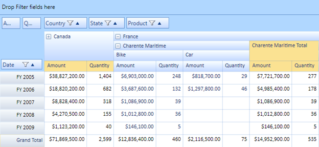

This feature enables the user to maintain the collapsed or expanded state in the PivotGrid when pivot schema is changed.
Use Case Scenarios
The user can maintain collapsed or expanded states and save/load these settings dynamically in the PivotGrid control.
The following image shows state persistence in the PivotGrid control:

Figure 33 PivotGrid with collapsed/expanded states
Properties
Table 7: Property Table
|
Property |
Description |
Type |
Data Type |
Reference links |
|
StatePersistenceEnabled |
Gets or sets a value indicating whether to maintain/show collapsed cells when pivot schema getting changed |
Dependency |
Boolean |
- |
Sample Link
The user can find a sample in the following location:
SystemDrive:\Users\<user_name>\AppData\Local\Syncfusion\EssentialStudio\<version_number>\BI\WPF\ PivotAnalysis.Wpf\Samples\Appearance\State Persistence Demo
Adding State Persistence to an Application
The user can enable or disable the state persistence by using the following code snippets in an application:
|
[C#] pivotGrid1.StatePersistenceEnabled = true;
|
|
[VB] pivotGrid1.StatePersistenceEnabled = true
|